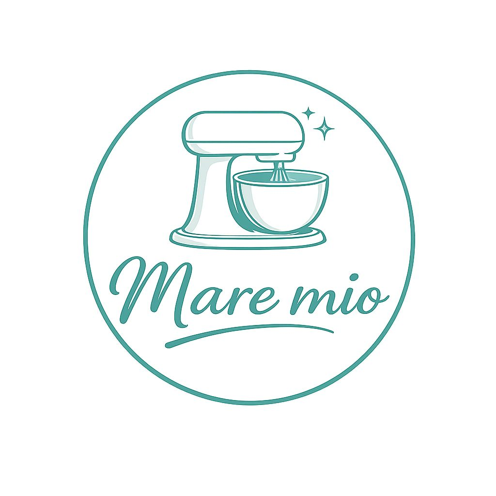

Un diseño minimalista para antojos extraordinarios. Calidad artesanal en cada bocado.
Nuestra receta secreta con un toque turquesa artesanal.
Suaves, esponjosos y decorados con absoluta precisión.
Sabores de temporada que solo encontrarás esta semana.